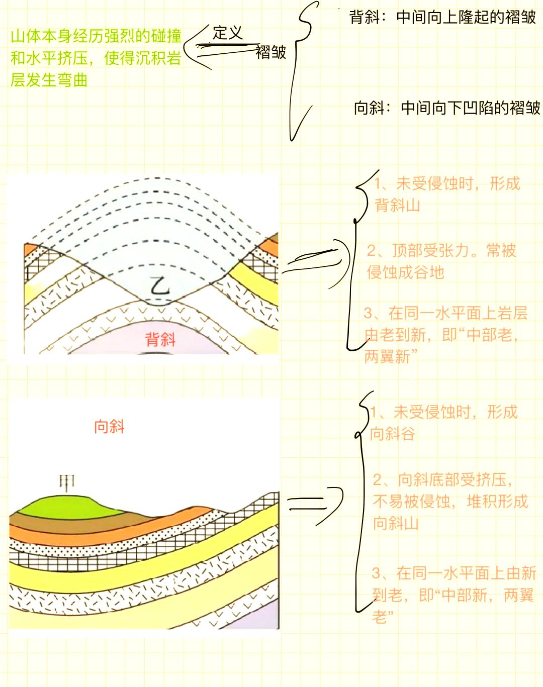

地壳在地质历史演化过程中，受到各种应力的不断作用，会导致岩层发生弯曲或破裂，形成褶皱（Fold）和断层（Fault）。这些地质构造不仅决定了地貌形态，也深刻影响矿产资源的分布以及地震、火山等地质灾害的成因。
一、什么是褶皱（Fold）？
褶皱是岩层在长期挤压、拉张或剪切应力作用下发生塑性变形而形成的弯曲结构。它最常见于造山带、造山运动区域或地壳受到强烈水平压力的地方。褶皱通常具有以下特征：
- 双向对称性：在理想状态下，褶皱的两翼坡度相当，褶皱轴几乎水平或略微倾斜；
- 岩层老幼顺序：沿着褶皱翼从轴部到两侧，岩层年龄通常呈现由新到旧或由旧到新的变化；
- 变形程度：褶皱可以分为柔性褶皱（岩层未发生破裂，仅弯曲）和刚性褶皱（局部发生破断，形成褶皱伴随的断裂）两种；
- 褶皱轴、轴面：褶皱轴是连接褶皱顶点（或底点）的假想线；轴面是穿过褶皱轴并与褶皱两翼分界的平面；
- 褶皱的空间形态：可表现为二维（在剖面图中呈现）或三维（在空间中呈现为褶皱山体）。
根据形式与几何特征，常见的褶皱类型包括：
- 1. 单向褶皱（Monocline）
- 只有一侧岩层发生倾斜，另一侧几乎未变形，形似台阶。多与浅表断层或阶地沉降有关，如美国犹他州的“六姐妹石桥”就是一道典型的单向褶皱。由于岩层弯曲幅度较小，常见于构造应力相对较弱的区域。
- 2. 对称褶皱（Symmetrical Fold）
- 褶皱两翼坡度相同或基本相同，褶皱轴接近水平。此时应力分布相对均匀，常出现在早期造山或中等程度的挤压环境中。在某些沉积盆地底部，也能观察到规模较小的对称褶皱。
- 3. 不对称褶皱（Asymmetrical Fold）
- 一侧翼坡度明显大于另一侧，褶皱轴呈一定倾斜。通常反映了片麻岩带或造山带内不同方向、大小的应力叠加，挤压作用更强的一侧岩层更急剧弯曲。
- 4. 折返褶皱（Recumbent Fold）
- 褶皱轴几乎水平或近乎水平，褶皱翼重叠，呈扭曲状。通常见于深部变形区，高压和高温条件下，岩层发生极度挤压和“翻转”。
- 5. 嵌套褶皱（Nappes & Isoclinal Folds）
- 在强烈挤压和变质环境下，褶皱的两翼几乎平行，褶皱轴近乎重合，形成一系列连绵、平行的等轴褶皱，岩层内部发生复杂的重叠与叠覆。

图：典型褶皱结构示意图
褶皱能够记录地壳演化的历史。例如：喜马拉雅山褶皱带中，岩层一层叠一层，清晰地显示了印度板块向欧亚板块的持续挤压过程。通过对褶皱的剖面分析，地质学家可以推断构造应力的方向、大小和变形时代。
二、什么是断层（Fault）？
断层是地壳岩体在应力作用下发生脆性破裂，并沿破裂面发生相对位移的一种构造现象。断层面可以从几厘米到数十米不等，当两侧岩块移动时，会产生一定的位移差。断层常伴随地震、地形断崖或活动断层带。
断层的基本要素包括：
- 断层面的走向与倾向：走向是指断层面与水平线的夹角；倾向是断层面相对于水平面的倾斜角度；
- 上盘与下盘：沿着断层面，断层上盘是位于倾斜面上方一侧的岩块，下盘则在倾斜面下方；
- 走滑方向：表示断层两侧岩块沿水平面相对滑动的方向；
- 断层带：断层面往往伴随一定厚度的破碎带或搓碎带，称为断层带，是岩石破裂和摩擦的集合区域；
- 断层规模：可分为微观断层、小断层和大断层，大断层常可见于卫星影像或地形图上。
根据断层两侧的相对位移形式，常见断层类型包括：
- 1. 正断层（Normal Fault）
- 在拉张应力（张裂环境）下形成，上盘相对于下盘向下滑动。此类断层往往使地表产生断崖或错位地貌，形成断崖边缘。典型例子有非洲东部大裂谷系的正断层群。
- 2. 反断层（Reverse/Thrust Fault）
- 在挤压应力（挤压环境）下形成，上盘向上推覆到下盘之上，常伴随褶皱形成。大规模反断层可以构成造山带的逆冲推覆体，例如喜马拉雅造山带中的逆冲断层。
- 3. 走滑断层（Strike-Slip Fault）
- 断层两侧岩块沿近乎垂直于断层走向的水平面相对水平滑动，没有明显的垂直位移。最著名的例子是美国的圣安德烈亚斯断层（San Andreas Fault），属于右旋走滑断层。
- 4. 斜滑断层（Oblique-Slip Fault）
- 兼具垂直位移与水平位移的断层。通常在复杂构造应力场下形成，既有拉张或挤压成分，又有走滑剪切成分。
图：常见断层类型示意图
断层是地震发生的高发带，因为断层两侧岩块在长时间的应力积累后，会突然释放能量造成断层面滑动，从而引发地震。例如：1976年中国唐山大地震即由唐山断裂带在浅部突然滑动造成，导致严重的人员伤亡与经济损失。
断层还会影响地下水流向、控制矿脉富集带的位置、影响油气储层构造圈闭类型。在勘探与工程地质中，对断层的位置、活动性和规模的调查至关重要。